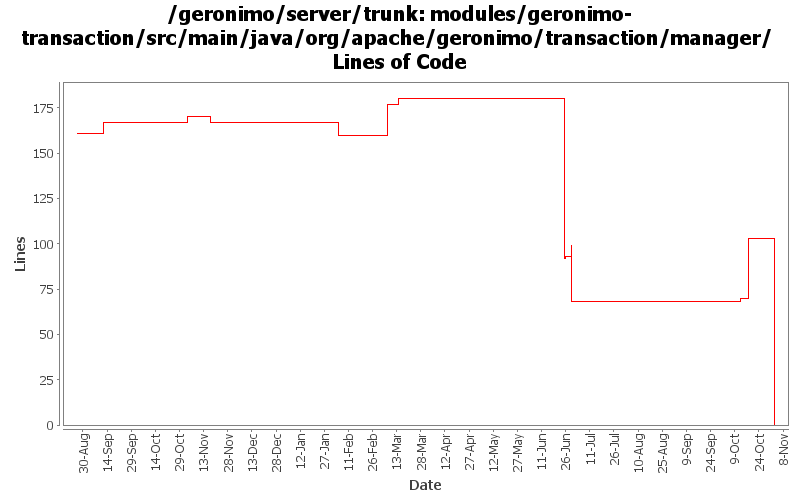

[root]/modules/geronimo-transaction/src/main/java/org/apache/geronimo/transaction/manager

| Author | Changes | Lines of Code | Lines per Change |
|---|---|---|---|
| Totals | 110 (100.0%) | 182 (100.0%) | 1.6 |
| djencks | 17 (15.5%) | 60 (33.0%) | 3.5 |
| kevan | 46 (41.8%) | 42 (23.1%) | 0.9 |
| akulshreshtha | 4 (3.6%) | 38 (20.9%) | 9.5 |
| jlaskowski | 3 (2.7%) | 19 (10.4%) | 6.3 |
| dwoods | 3 (2.7%) | 11 (6.0%) | 3.6 |
| rickmcguire | 2 (1.8%) | 5 (2.7%) | 2.5 |
| dain | 2 (1.8%) | 5 (2.7%) | 2.5 |
| jdillon | 7 (6.4%) | 2 (1.1%) | 0.2 |
| prasad | 26 (23.6%) | 0 (0.0%) | 0.0 |
GERONIMO-3565. Modules distributed amongst framework/modules and plugins
0 lines of code changed in 26 files:
GERONIMO-3520 Make TransactionManager a Statistics Provider. Patch by Viet H. Nguyen
1 lines of code changed in 1 file:
GERONIMO-3250 Make TransactionManager a Statistics Provider. Patch by Viet H. Nguyen
35 lines of code changed in 1 file:
GERONIMO-2879 Set j2eeType to JTAResource for Transaction Manager
2 lines of code changed in 2 files:
add miniscule documentation
4 lines of code changed in 2 files:
GERONIMO-3272 eliminate the geronimo-transaction-jta11 module, we are entirely on jta11 now. Also refix logging error for non-NamedXAResource. Also make jpa stuff use spec interfaces and not drag ejb spec into the tm
3 lines of code changed in 2 files:
GERONIMO-3259 Correctly log the stack trace in TransactionImpl.java
7 lines of code changed in 1 file:
GERONIMO-3259 Log the stack trace in TransactionImpl.java
2 lines of code changed in 1 file:
GERONIMO-3259 Unuseful exception stack trace in TransactionImpl.java
2 lines of code changed in 1 file:
GERONIMO-906 Component references involved in transaction recovery are backwards. Unfortunately this change includes a lot of import optimizations, I hope they are not too confusing to review
26 lines of code changed in 5 files:
GERONIMO-3246 Cleanup exception handling so stack traces for first failures are not discarded.
5 lines of code changed in 2 files:
Active transactions include those marked for rollback only
1 lines of code changed in 1 file:
GERONIMO-3135 allow enlisting in tx marked rollback only
1 lines of code changed in 1 file:
Add null guard when processing prepared xa resources. Seems that the upgraded derby can return null on a recover() call, rather than a 0 length array
1 lines of code changed in 1 file:
r6720@Bliss: jason | 2007-03-20 01:48:14 -0700
(GERONIMO-2995) Replace backport-util-concurrent usage with java.util.concurrent
2 lines of code changed in 1 file:
Added container matching logic for MDBs
4 lines of code changed in 1 file:
GERONIMO-2838 Make sure that transaction recovery is handled properly. Multiple NamedXAResources can share a single ResourceManager. Need to be sure that we're only committing/updating XidBranches if the resource was the XAResource used for the transaction.
23 lines of code changed in 1 file:
GERONIMO-2809 getTransactionStatus should return Status.STATUS_NO_TRANSACTION when there's no tx, not throw an exception
2 lines of code changed in 1 file:
GERONIMO-2795 Allow lots of interposed synchs to be registered
18 lines of code changed in 1 file:
GERONIMO-2537 Update the src headers in server/trunk/modules to be compliant with the new ASF src header and copyright policy (http://www.apache.org/legal/src-headers.html). I also did some cleanup of the src headers and tried to make them all a consistent format
18 lines of code changed in 44 files:
Partial fix for GERONIMO-2537 All Geronimo source files must be brought in line with the new ASF source header and copyright notice policy
The modules directory is supposed to be migrated. There're some issues with some files, but they'll be handled manually
19 lines of code changed in 3 files:
GERONIMO-2349 jta 1.1 support methods in jta 1.0.1B tx manager, with extension jars for jta 1.1 support
6 lines of code changed in 5 files:
Apply standard properties
0 lines of code changed in 6 files: